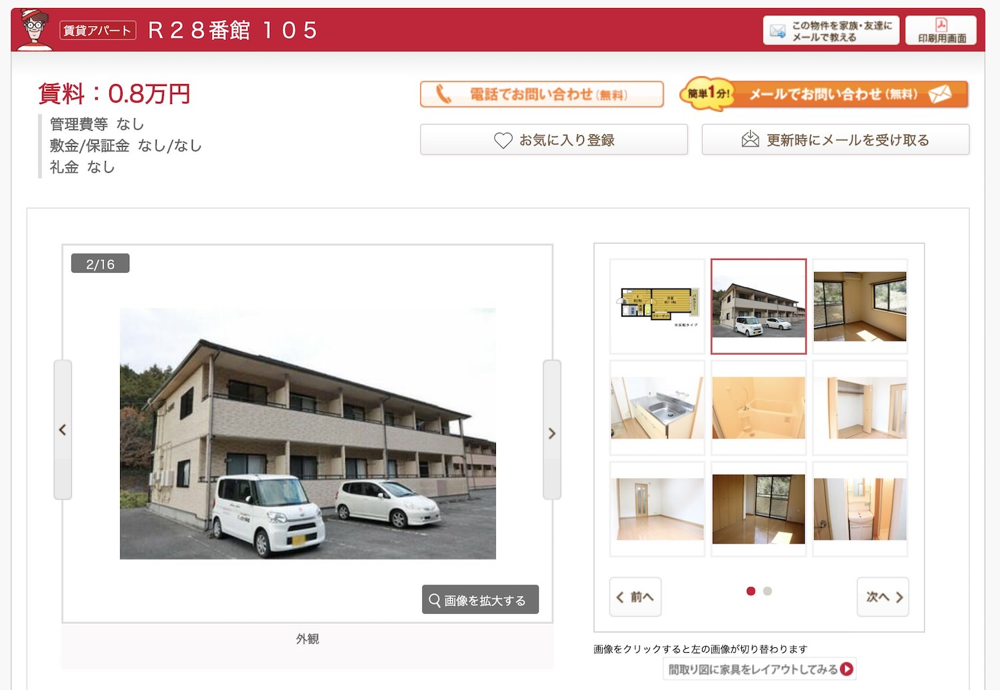
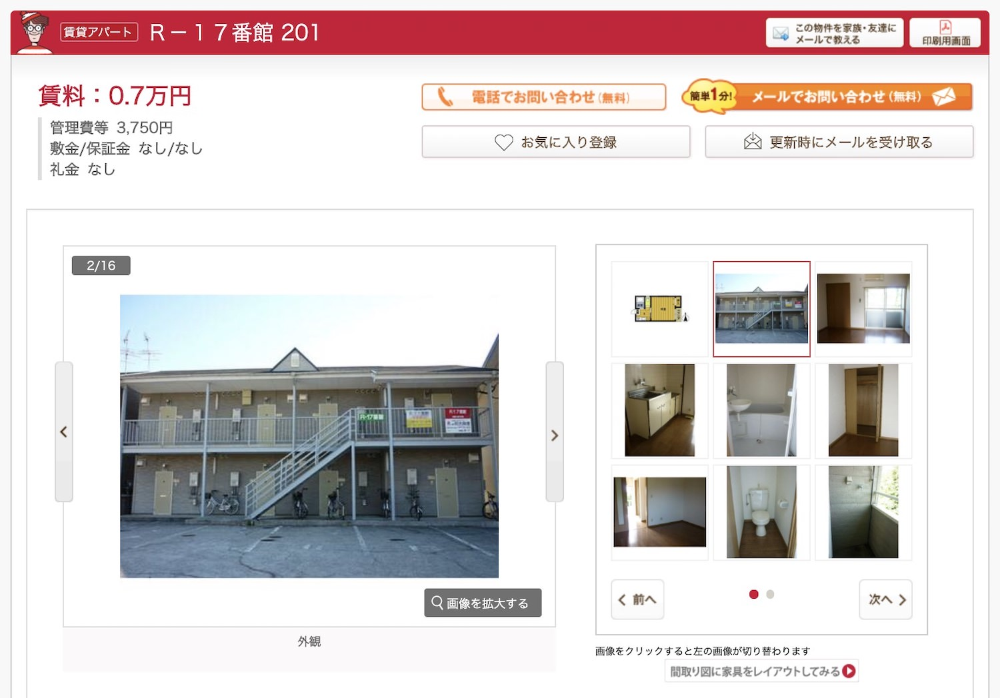
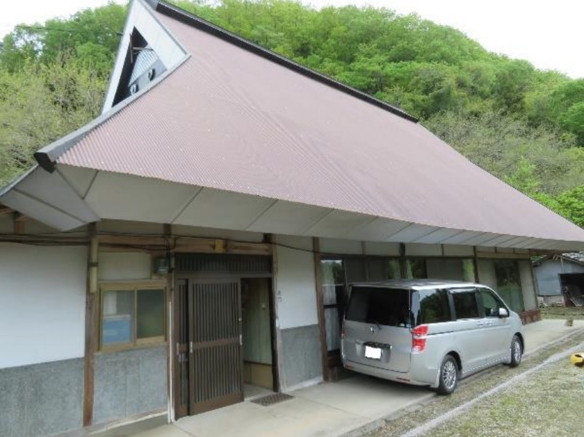
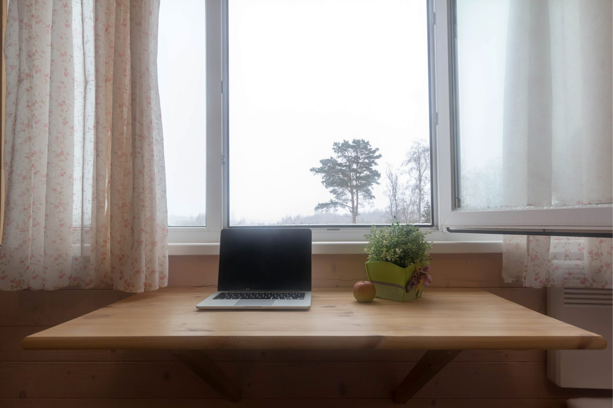

【幸せ】月７万円で、生きていく方法【自給自足系YouTuberとは】
こんにちは、ゆーだいです。
生活費を下げ、心にゆとりを持って生きています。
バンコクの田舎暮らしでは、生活費が月５万円でした。
さて、先日に下記のツイートをしました。
ベーシックインカムが「月7万円」と言われたときに、一部の人は「そんな金じゃ生きれない」と反発しますが、そんなことないと思う。
すこしググれば、地方のシェアハウスや民泊が見つかります。家賃は1万くらいに落とせて、Wi-Fi付きもある。あとは自炊メインにしたら、月7万で、余裕&幸せだと思う😌— マナブ@バンコク (@manabubannai) September 29, 2020
すこしググれば、地方のシェアハウスや民泊が見つかります。家賃は1万くらいに落とせて、Wi-Fi付きもある。あとは自炊メインにしたら、月7万で、余裕&幸せだと思う😌
今回は「月７万円生活」を深堀りします。
人生は自由だし、いつでも変化できる話です。
月７万円で、生きていく方法
{kind=link}
家賃8,000円の家が、こちら
ちょっと検索しました。

こちら大分県にある物件ですが、普通にキレイですよね。
こういった場所に住めば、人生は楽になりそうです。
{kind=link}
もしくは、下記もあります。

こちらも大分県の物件です。
たまたま大分県が多かったですが、他にもたくさんあるはずです。
{kind=link}

こちらは「家賃１万円の民家（岡山県）」です。
192坪とのことなので、かなり大きいですよね。
{kind=link}
25メートルプールくらいの広さです。
人生に、あまりお金は要らない
多くの人は「もっと稼がないと」とか、もしくは「継続して働かないと」と考えていますが、そんなことないと思います。
例えばですが、田舎とかなら「０円の家」とかもある訳です。
０円で家を購入して、あとはバイトするなり、ちょっとネットから収入を作るなりしたら、すぐに人生は楽になります。
都会に住んで、高い家賃を払い、給料の大半は固定費で消えていく…。
これで得するのは、不動産のオーナー、経営者、国くらいです。
要するに、お金持ちが、さらにお金持ちになる仕組みですよね。
そうじゃなく、そんな「普通の生き方」なんて捨てていいと思います。
月５万円生活で、気づいたこと
僕はバンコクの田舎にて、月５万円で生活していました。
当時は収入が高めで、月50万くらいでした。
当時の僕が思ったこと
上記のとおり。
こういった思考になると、人生が楽になりますよ。
そして結果として、楽しいことに注力するようになります。
僕の場合は「ブログ」でした。
生活費には困らないし、ブログをしっかり書くか、という感じ。
そんな気持ちでブログを書いていたら、ブログが伸びていき、収入がさらに伸びていきました。
楽しいことをして、稼ぎ、生きるだけ。シンプルですね。
そして身の回りにも、こういった友人が増えました。
そして皆さんの共通点は、収入が高いこと。
要するに、お金から開放されると、さらに稼げるという感じです。
もっと休んでいいと思う
僕は23歳から、海外移住しました。
海外と日本において、働き方を比較してみて、思うことがあります。
上記です。
例えばですが、オランダ人の友達は、大学を休学し、ずっと遊んでいたりします。
フィリピン人の友達は、ずっと筋トレばかりしています。
こういった感じで、わりとフリーダムな人が多いです。
日本も、もっとそんな感じでいいと思うんですよね。
そのためにも、削れる場所は削り、固定観念は捨てて、ミニマムに生きるのもありだと思います。
なお、全員にこの価値観は強制しません。
とはいえ、人生は長いので、１回くらい試して実験するのも、ありです。
格安生活をしつつ、稼ぐアイデア

田舎に住もうと思っても、結局のところ「お金の心配が…」という方が多いはず。
なので、稼ぐアイデアもまとめておきます。
{kind=link}
- クラウドソーシング
- 田舎暮らしを発信する
- バンライフをして発信する
- 田舎物件でスクールを開催
- 自給自足して発信してみる
思いつきですが、上記のとおり。
順番に解説していきます。
クラウドソーシング
これは定番ですね。下記のとおり。
- ランサーズ
- クラウドワークス
こういったサイトで、小さな仕事をやってみる感じです。
ライティング系の仕事なら、難易度も高くないです。
田舎暮らしで生活費が７万なら、例えば「クラウドソーシングで３万、バイトで５万」とかを稼げば良さげですね。
田舎暮らしを発信する
基本的には「YouTubeでの発信」がいいと思います。
地方移住とかって、すこしずつトレンドになってますよね。
このように「これから人が流れる」ということを予測しつつ、事前に情報を出してあげる感じですね。
もちろん試行錯誤は必須ですが、狙い目でもあります。
バンライフをして発信する
田舎暮らしをする際に、僕は「そもそも家を借りる必要あるのか」と思ったりもします。
YouTubeに関していうと、バン生活ってトレンドになっています。
バンを買ったら高いですが、レンタルで試しつつ、発信しつつ、検証するのもありですね。
田舎物件でスクールを開催
田舎のメリットは、土地が安いこと。
なので、都内とかのスクールに営業をかけて、田舎で「スクール開催」をしてもらうのは、どうでしょう。
借りてる家が広いなら、場所貸しとかでも稼げる可能性あり。
もしくは、地方で合宿イベントをする際の「物件まとめサイト」とかもありかもですね。
自給自足して発信してみる
ここに関しては、現在（2020年9月）だと競合ゼロのはず。
そして、僕はチャンスを感じます。
どこかの超田舎で、完全に「自給自足」の生活をします。
そして、それを発信しましょう。
もしくは、家にカメラを設置しておいて、ずっと生放送するなど。
僕が密かにチャンスを感じているのが、自給自足系YouTuberです。
最後に：あなたの人生は自由です
というわけで、今回は以上にします。
いや、全くそんなことないですよ。
すべての人の人生は「完全に自由」です。
なので、この記事を読んで決断し、行動したら、そこから人生は変化します。
✅人間が変わる方法は、３つしかない
・時間配分を変える
・住む場所を変える
・付き合う人を変える経営コンサルタントとして有名な「大前 研一さん」の言葉です。これ、かなり本質ですよね。ちなみに、この３つを同時に実行すると、人生は巨大に変化する😌
— マナブ@バンコク (@manabubannai) September 29, 2020
リスクもあるし、失敗するかもです。
とはいえ、失敗したら、もとの生活に戻せば良くないですかね。
現状の生活スタイルが「完全にベストだ」と考えるなら、そのままでいいかもです。
僕は、色々と変化してきました。変化した結果、いまの生活があります。
バンコクに住んでおり、恐ろしいほどに快適です。
人生を、自由に生きてみてください。
いつでも変われます😌
P.S：普段の僕は「Twitter」を軸に発信しています。また最近は「Webマーケ教材」の作成に注力しており、ネットで稼ぐスキルを学べます。ブログの更新通知はtwitterからお知らせします。